Making plots with humdrumR
Nathaniel Condit-Schultz
2026-03-24
Plots.RmdWelcome to “Making plots with
humdrum”!
R has two major plotting systems that are widely used: 1) R’s built-in
base graphics functions (?graphics-package) and 2) the more
modern ggplot2.
Humdrum
is compatible with both of these systems.
Humdrum
also has it’s own, built-in draw() function, which
is basically a spiffy (easier to use) extension of base-R graphics.
In this vignette we give a detailed showcase of the features of draw(). We’ll then we go over some basic concepts from base-R graphics, which you can use if you want to customize draw() plots. Finally, we’ll show you how to use ggplot2 with humdrum data, if that floats your boat.
Let’s load some humdrum data, and create some data fields to plot:
bach <- readHumdrum(humdrumRroot, 'HumdrumData/BachChorales/.*krn')We’ll use semits() and duration() to
convert pitch and rhythmic information into numbers, and
solfa() and recip() to represent them in
categorical form.
Draw()
Humdrum’s
draw() function is basically a fancy wrapper around
base-R functions like plot() and hist(). Like
these functions, using draw() is simple: just pass
data (atomic vectors ?vector) in to get a plot. The draw() function will look at the input arguments you
give it, and make an appropriate plot for that input type. Currently,
draw() can make seven different types of plots, depending
on the input passed to it.
To decide what kind of plot to make, draw() looks
at its first two arguments, x and y, which
represent (you guessed it) the X and Y axes. Here are the types of plots
associated with different types of x/y
arguments:
x |
y |
Plot type | Function |
|---|---|---|---|
numeric |
(missing) | Density Histogram/Contour | draw_density() |
| (missing) | numeric |
Quantile plot | draw_Qplot() |
| (or Violin plot) | |||
numeric |
numeric |
Scatter/line plot | draw_scatter() |
character/factor
|
numeric |
Violin plot | draw_violins() |
numeric |
character or factor
|
Area chart | draw_area() |
character/ factor
|
(missing) | barplot | draw_barplot() |
| (missing) |
character/factor
|
barplot | draw_barplot() |
character/factor
|
character/factor
|
Heat map | draw_heat() |
To see this in action, let’s see what happens if we pass our
Semits field as either the first (x) or second
(y) argument to draw():
bach |> draw(Semits)
bach |> draw( , Semits)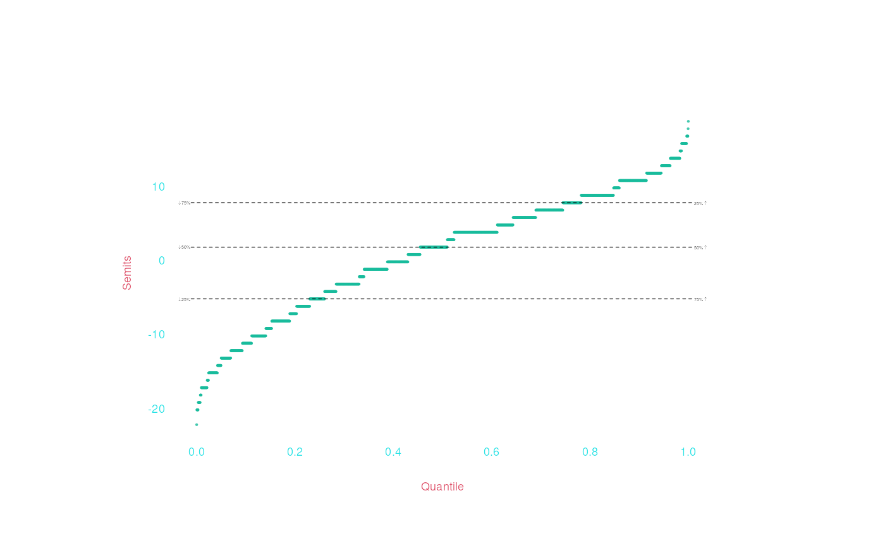
On the X axis, numeric data is drawn as a density histogram
(draw_density()); on the Y axis, a quantile plot
(draw_Qplot()). What if we pass two numeric variables
(Semits and Duration)? We get a
scatter plot:
bach |> draw(Duration, Semits)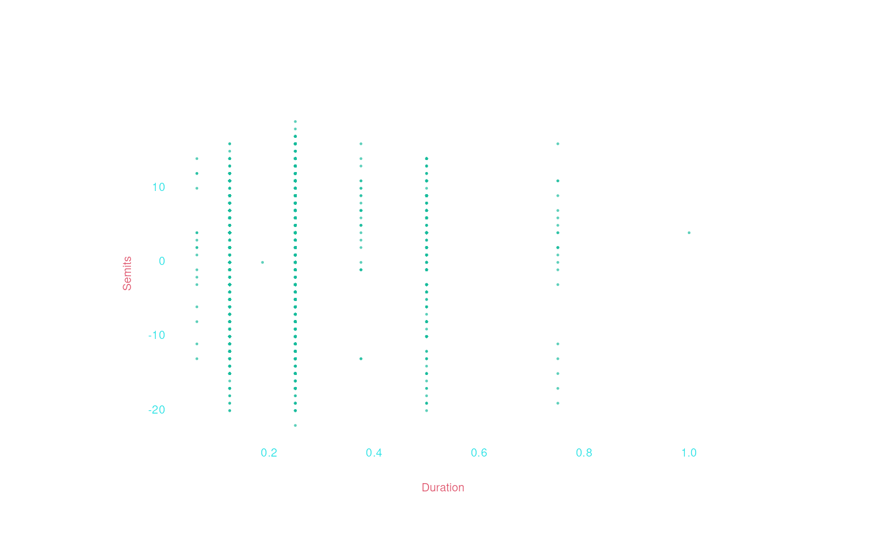
We can see that there are really only eight duration values in the
data (because durations in music scores aren’t really continuous
numbers). To make the data easier to interpret, we can use the
jitter argument to randomly move points a little bit, so
you can see how many there are. (Also check out the lm
argument.)
bach |> draw(Duration, Semits, jitter = 'xy', lm = TRUE)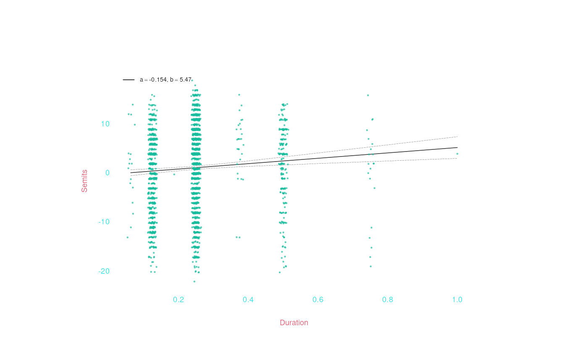
Maybe it would make more sense with duration on a logarithmic scale?
bach |> draw(Duration, Semits, jitter = 'xy', log = 'x', lm = TRUE)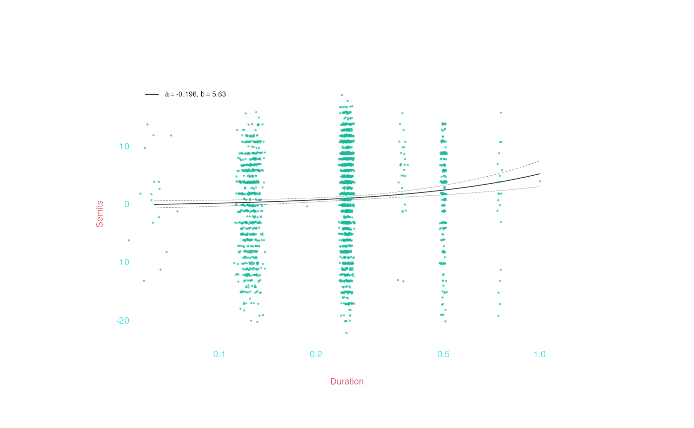
It does appear that there is a positive corelation/slope between
duration and pitch (though this is not a statistical test!), but it
still bothers me that the duration values aren’t really continous
numbers. Let’s instead treat duration as categories: we can simply pass
draw() the Recip representation of
duration, which are character strings:
bach |> draw(Recip)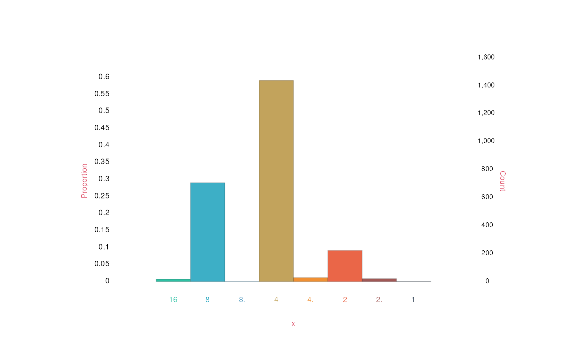
We can also check out other categorical data, like the
Instrument field, which records the voice type in our
chorale data:
bach |> draw(Instrument)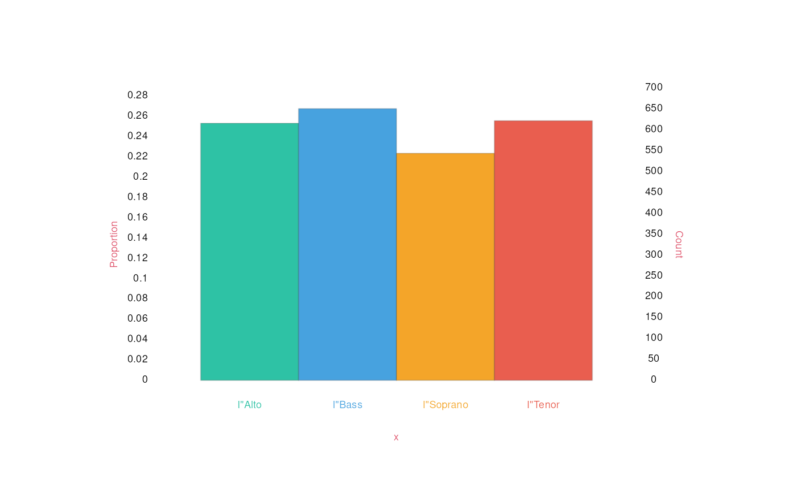
bach |> draw(Instrument, Recip)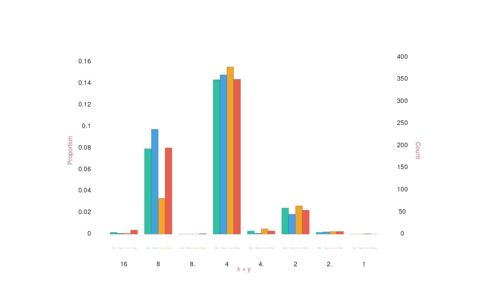
But going back to our original goal, what if you mix number and categorical data?
bach |> draw(Recip, Semits)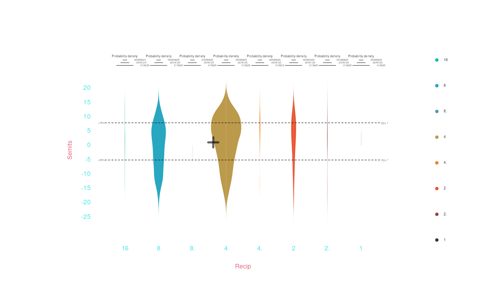
The relationship between duration and pitch height does seem plausible, though it is weak. What about a relationship we’d expect to be a bit stronger? Let’s look at voice type vs pitch height (we’ll make two plots, flipping the X and Y axes):
bach |> draw(Instrument, Semits)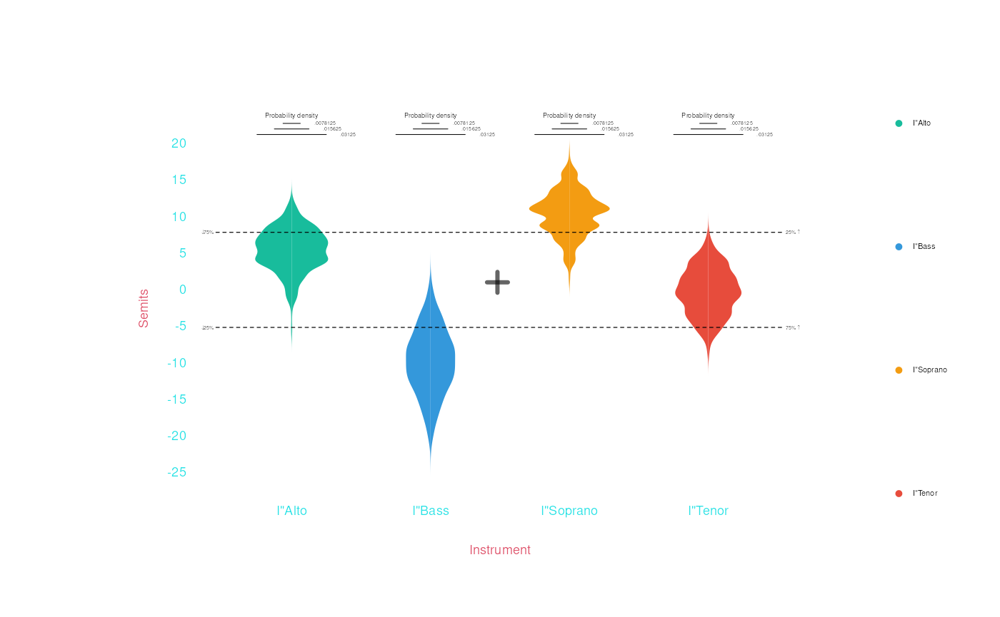
bach |> draw(Semits, Instrument)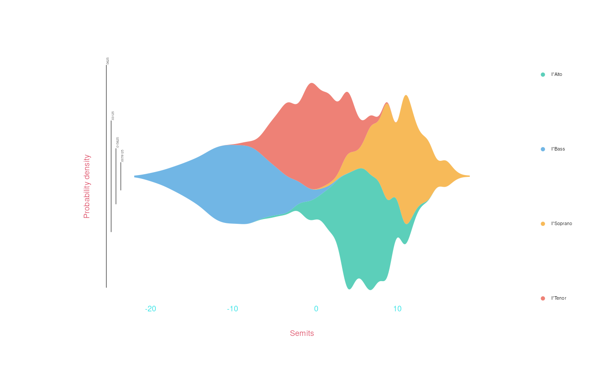
There is a clear relationship between voice type and pitch height—which is, of course, what we’d expect!
Title and Axis Labels
Use the title (and/or subtitle) arguments
to set a plot title. You can also use xlabel and
ylabel to set the axis labels.
bach |> draw(Instrument, Semits,
title = 'Violin Plot of Pitch by Voice Type', subtitle = 'In 371 Bach Chorales',
ylabel = 'Semitones')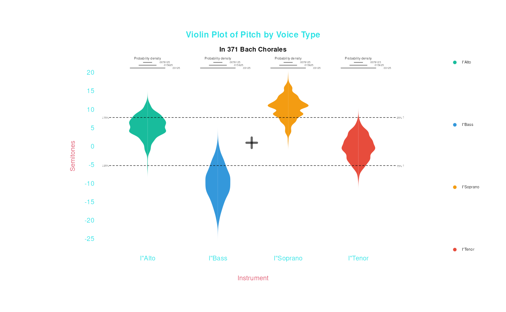
Plotting more dimensions
When plotting data, we can use other “dimensions” than X and Y
position to show data. For example, color. Look what happens if we pass
Instrument (or another categorical variable) as the
color argument, instead of x or
y:
bach |> draw(color = Instrument, Semits, smooth = TRUE,
title = 'Pitch by Voice Type',
xlabel = 'Semitones')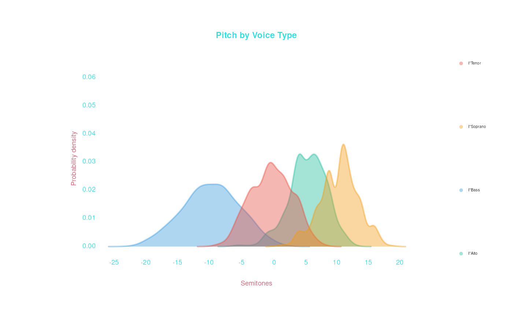
We can also use color to add dimensionality to
a plot. For example, we can go back to our duration-pitch plot, but use
color to represent voice types:
bach |> draw(Duration, Semits, jitter = 'x', lm = TRUE,
color = Instrument)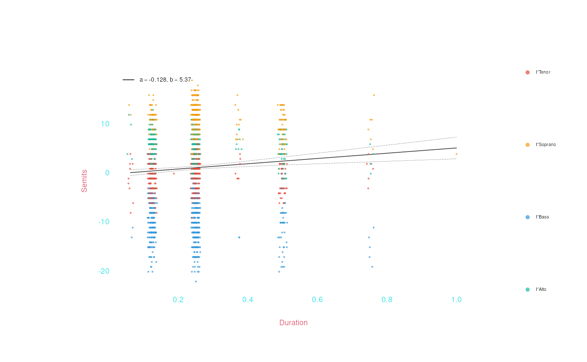
What if we want a separate regression line for each group? Use the
conditional argument to indicate that we want
lm computed separately within groups:
bach |> draw(Duration, Semits, jitter = 'x', lm = TRUE,
color = Instrument, conditional = list(lm = TRUE))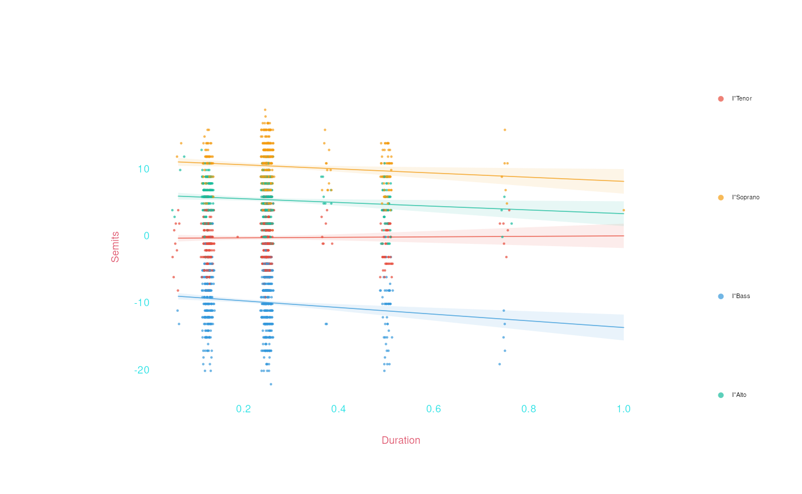
We can also use pointStyle and pointSize
arguments to represent dimensions of data.
Other arguments
The draw() function has a bunch more cool arguments. Below we show a bunch of arguments used when plotting a 1-dimensional distribution of numeric values. Many (but not all) of the arguments shown below can be used with other types of plots—and other types of plots also have their own special arguments, which you can read about in the manual pages.
Mean and quantiles
The most useful are mean and quantiles,
which can be used to add the mean or quantiles of numeric data to a
plot. For example, looking at the semitone value, we can mark the mean
semitone and the 25th-75th interquartile range, like this:
bach |> draw(Semits, mean = TRUE, quantiles = c(.25, .75),
title = 'Distribution of pitch in Chorales',
subtitle = 'Showing the mean and interquartile range')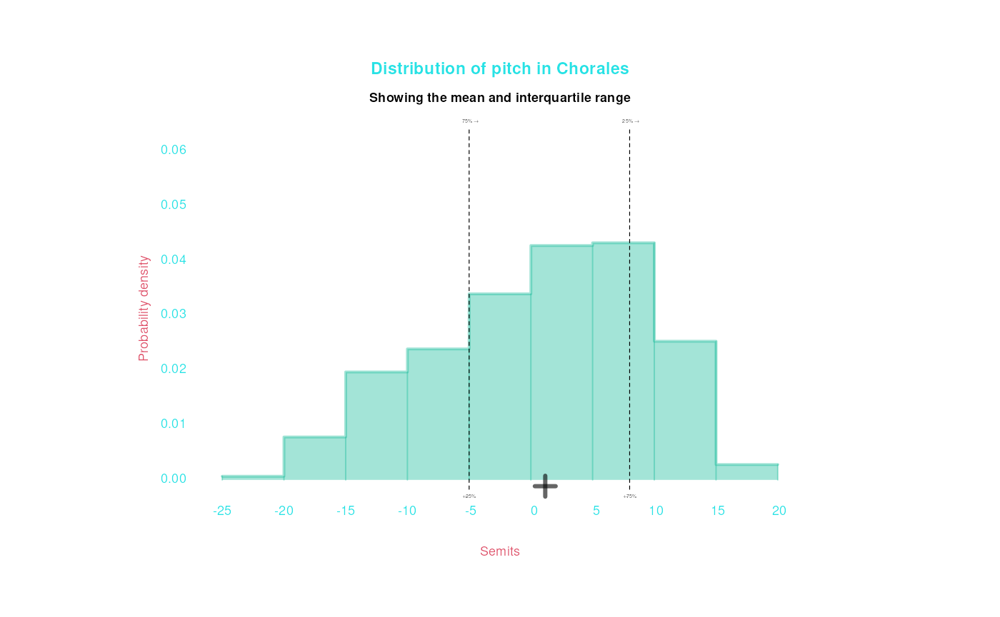
The median value is the 50% quantile, so you could use that instead:
bach |> draw(Semits, quantiles = .5,
title = 'Distribution of pitch in Chorales', subtitle = 'Showing the median')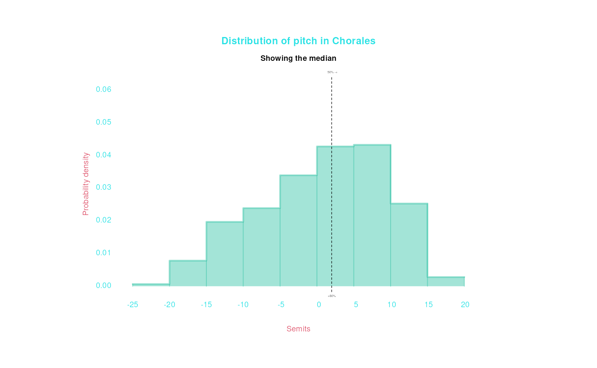
If you want to group the histogram by color again, you can use the
conditional argument to control whether you compute the
mean/quantiles separately for each group, or not. As before, let’s turn
on smooth = TRUE, cause otherwise the histogram gets a bit
messy:
bach |> draw(Semits, color = Instrument,
mean = TRUE, quantiles = .5, smooth = TRUE,
title = 'Distribution of pitch in Chorales', subtitle = 'Showing the overall mean and median')
bach |> draw(Semits, color = Instrument,
mean = TRUE, quantiles = .5, smooth = TRUE,
conditional = list(mean = TRUE, quantiles = TRUE),
title = 'Distribution of pitch in Chorales', subtitle = 'Showing the mean and median of each voice type')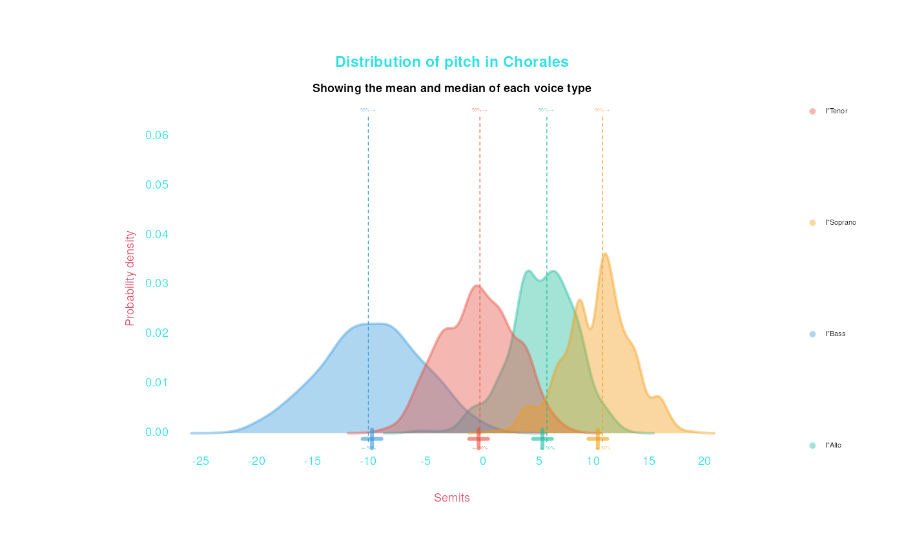
Showing points and counts
A histogram is a visual approximation of the distribution of
a data, and it may obscure true aspects of the data. Notably, the
ammount of of data isn’t shown in a histogram. It can be a good
idea to take a look at how much data there is using
showCounts:
bach |> draw(Semits, mean = TRUE,
showCounts = TRUE,
title = 'Distribution of pitch in Chorales',
subtitle = 'Showing count in each bin')You can also use showPoints to actually show
all the data points, spread out above the histogram:
bach |> draw(Semits, mean = TRUE,
showPoints = TRUE,
title = 'Distribution of pitch in Chorales',
subtitle = 'Showing all data points')Ah! Using showPoints reminds us that the semitone data
is not really continuous, and that there are clear bars of more common
(C) and less common (F#) notes thoughout the range of data.
We can also manipulate our histogram/density plots by passing
arguments through to the underlying hist() and
density() functions. You can look at those function manuals
to learn all the possibilities, but for now, you can focus on the
breaks argument (for histograms) and the bw
(bandwidth) argument (for smooth density contours):
bach |> draw(Semits, mean = TRUE,title = 'Distribution of pitch in Chorales',
breaks = 20)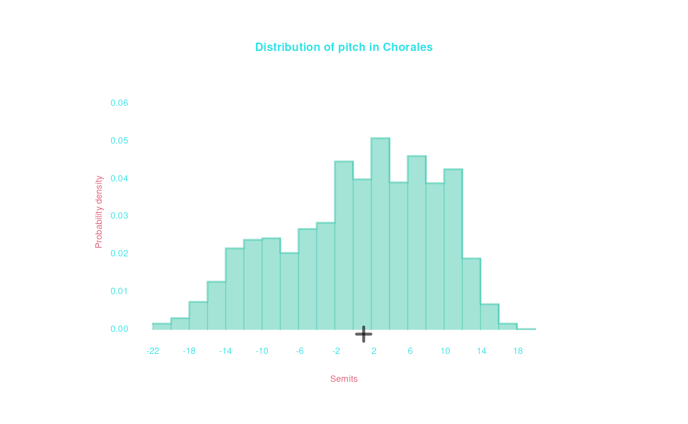
bach |> draw(Semits, mean = TRUE,title = 'Distribution of pitch in Chorales',
breaks = 40)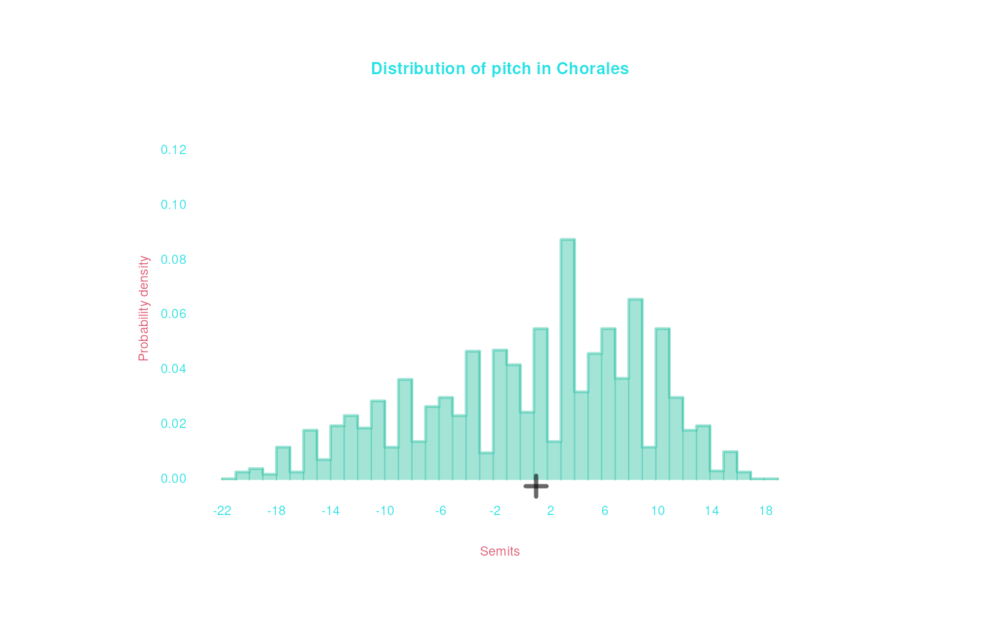
bach |> draw(Semits, mean = TRUE, smooth = TRUE,
title = 'Distribution of pitch in Chorales',
bw = 1)
bach |> draw(Semits, mean = TRUE, smooth = TRUE,
title = 'Distribution of pitch in Chorales',
bw = .5)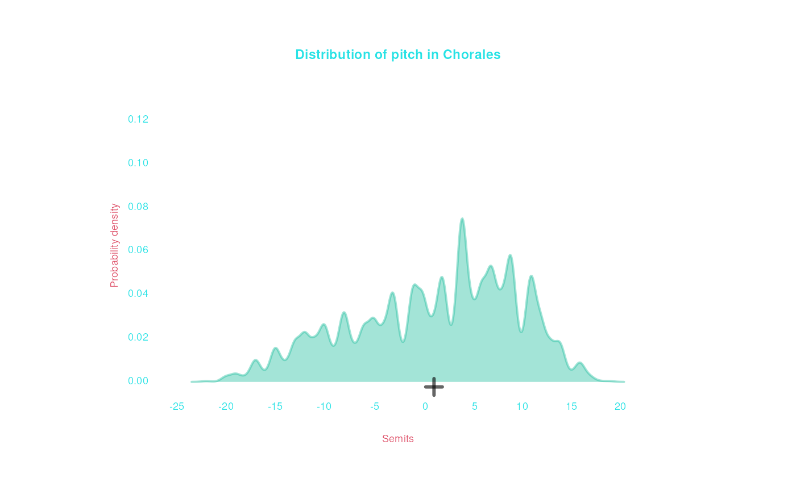
Normal Reference
Another cool argument is normalReference, which can be
used to overlay a “reference” normal (Gaussian) distribution on a plot
of numeric data. The mean and standard deviation of this “reference”
distribution are taken from the data. If the data is normally
distributed, it should come close to the reference distribution; if the
data clearly mismatches the reference, this means the data is not well
approximated by a normal distribution.
bach |> draw(Semits, mean = TRUE, smooth = TRUE,
title = 'Distribution of pitch in Chorales',
normalReference = TRUE)We can see that the semitone data is skewed a bit, compared to a normal distribution. Maybe, the pitches are normally distributed within each voice?
bach |> draw(Semits, mean = TRUE, smooth = TRUE,
color = Instrument,
title = 'Distribution of pitch in Chorales, by Voice Type',
normalReference = TRUE, conditional = list(normalReference = TRUE))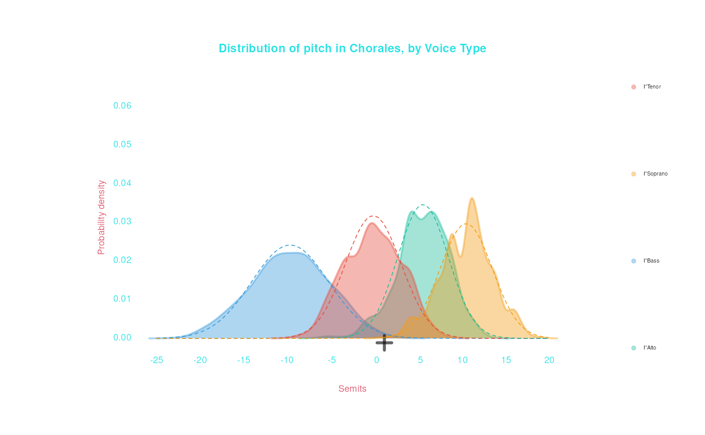
The data in each voice group is a bit less skewed, but still diverges from normal a little bit.
Multiple plots
Facets
Another approach is to create multiple plots for different groups. We
can do this with the facets argument. See what happens we
pass list(Instrument) to facets, instead of
color:
bach |> draw(Duration, Semits, mean = TRUE, smooth = TRUE,
facets = list(Instrument),
title = 'Distribution of pitch in Chorales, by Voice Type')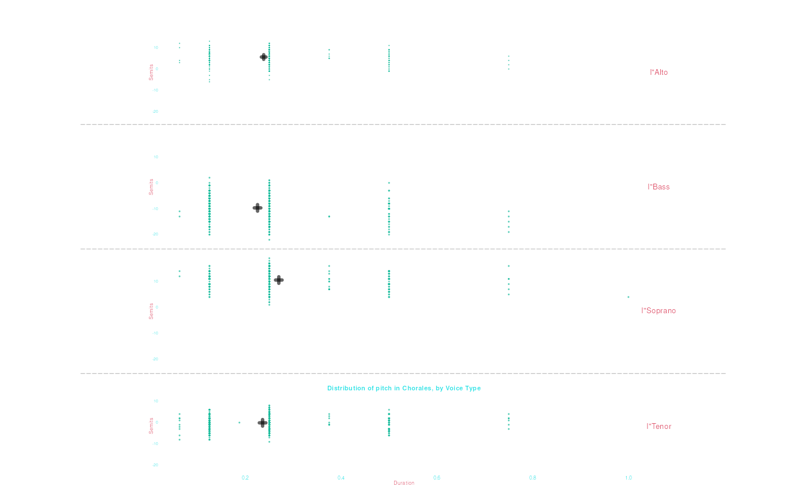
To put the plots side by side, make the first argument of the
facets list NULL:
bach |> draw(Recip, Semits, mean = TRUE, smooth = TRUE,
facets = list(NULL, Instrument),
title = 'Distribution of pitch in Chorales, by Voice Type')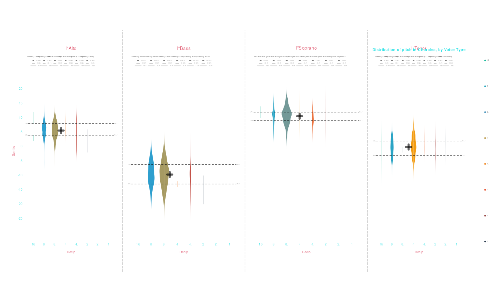
To arrange plots in two dimensions, pass a facet with
two elements (the first for rows, the second for columns).
bach |> draw(Recip, Semits, mean = TRUE, smooth = TRUE,
facets = list(ifelse(is.major(Key), 'Major', 'Minor'),
Instrument),
title = 'Distribution of pitch in Chorales, by Voice Type')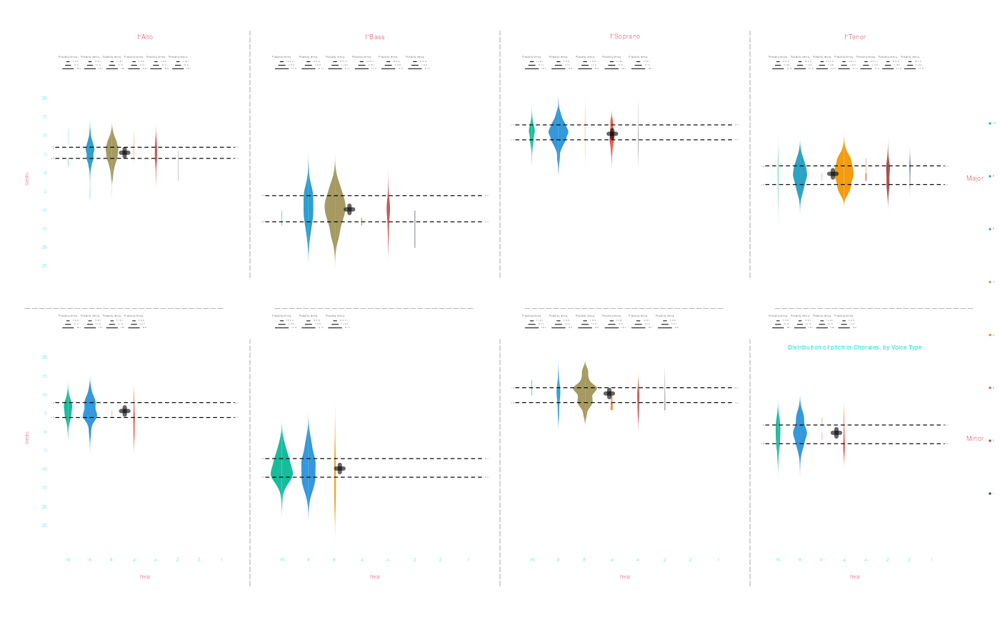
Beside/Below
Another option is to explicitly place plots side-by-side (or one
above the other) using the drawBeside() or
drawBelow() functions, which can be combined:
histogram <- bach |> draw(Semits)
violins <- bach |> draw(Recip, Semits)
scatter <- bach |> draw(Duration, Semits)
drawBeside(histogram, violins)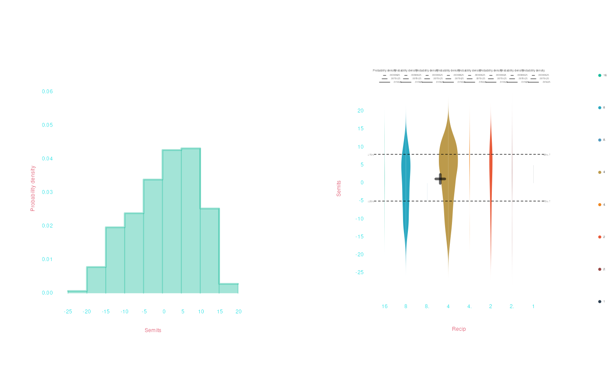
drawBelow(histogram, violins)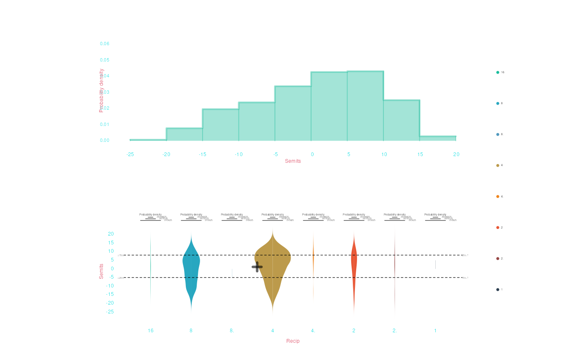
drawBelow(drawBeside(histogram, violins), scatter)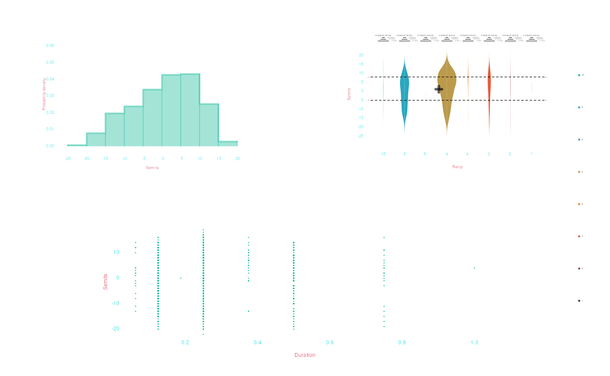
Use drawNothing() to insert empty spots in a layout you
are creating:
drawBelow(drawBeside(histogram, violins), drawBeside(scatter, drawNothing()))Saving plots
Making pretty plots on the fly is all well and good, but what if want
to save them for later, or use them in a paper? We can save any plot
created by draw() to a file by passing it to
drawToFile(). The only the thing you need is a filename
with an extension (either bmp, jpg,
pdf, png, svg, or
tiff)—drawToFile() will use the extension of
your filename to determine what kind of file to create.
bach |> draw(Semits, color = Instrument,
mean = TRUE, quantiles = .5, smooth = TRUE,
conditional = list(mean = TRUE, quantiles = TRUE),
title = 'Distribution of pitch in Chorales', subtitle = 'Showing the mean and median of each voice type') |>
drawToFile("Myplot.png")
violins <- bach |>
draw(Recip, Semits, title = 'Violin plot of Pitch')
drawToFile(violins, 'Violins.png')
drawToFile(violins, 'Violins.svg')Customizing draw() plots
We’ve shown here that
humdrum’s
draw() function has a lot of great options. However,
it’s inevitable that you might want to make plots that can’t be done
with draw()—or ggplot. Fortunately, draw() is built on top of R’s base graphics system,
which is extremely powerful, giving you precise control of every aspect
of plots.
The simplest option to customize draw() plots is to add to them using base-R graph functions. However, for more complex/customized plots, you’ll eventually need to dive deep into base-R graphics (or ggplot2).
Base-R graphics is centered around a few main plotting functions:
plot(), barplot(), and hist().
These functions actually work, under the hood, at the core of
draw(). Additional functions can then be used to
add elements on top of plots you already created:
points(), arrows(), abline(),
lines(), axis(), polygon(), etc.
These “adding” functions can be used with draw() too.
Adding plot functions
The best way to “add” content to draw() plots by writing
code using base-R adding functions, and then using
drawMore(). For example, we know that draw()
has the mean argument to mark the mean of the data with a
cross—but what if you wanted to draw a line across the screen marking
the mean? There is no draw() argument for that
(yet), but you can use the base-R abline() function to do
this—specifically, the v argument can be used to draw a
vertical line. So we could do something like this:
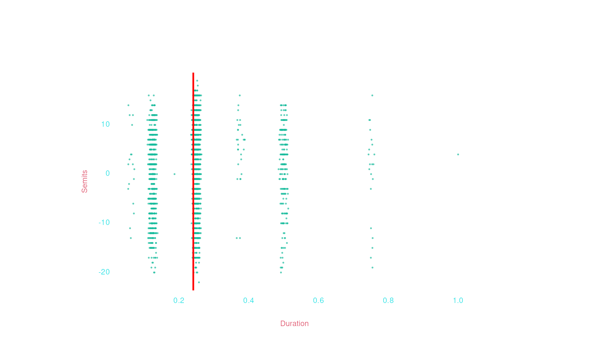
Maybe we ’d also like to add some text, like the exact value of that
mean? Use the base-R mtext() function:
bach |>
draw(Duration, Semits, jitter = 'x') |>
drawMore(abline(v = mean(x), col = 'red', lwd = 2),
mtext(paste0('mean duration:\n', round(mean(x), 2)), side = 3, at = mean(x), col = 'red'))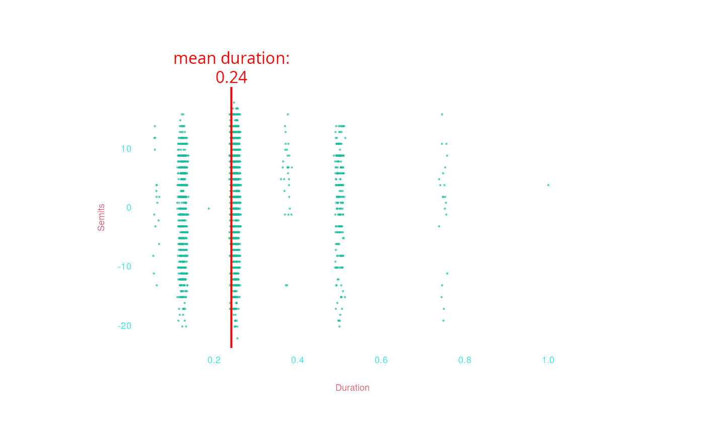
Or maybe you’d like to shade the area containing pitches below middle
C, with durations longer than a quarter note. We can do this with base-R
polygon(), though it’s a bit complicated:
bach |>
draw(Duration, Semits, jitter = 'x') |>
drawMore(polygon(x = c(.25, 1, 1, .25),
y = c(-25, -25, 0, 0),
col = rgb(.5, .5,1 ,.5, alpha = .1), border = FALSE))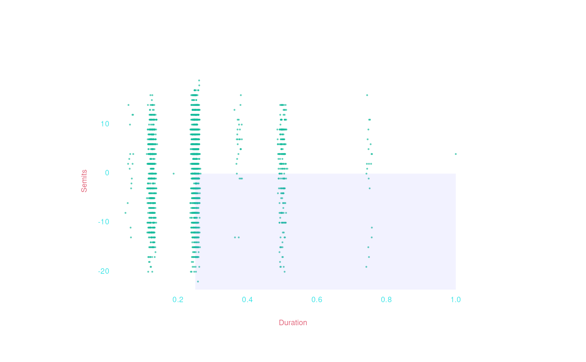
Other functions you might want to read about are
arrows(), graphics::segments(),
points(), text().
GGplot2
GGplot2 is probably R’s
most popular graphing library.
Humdrum
has methods to enable us to use ggplot2 with humdrum
data.
I won’t give a full explanation of how to use ggplot2
here, but here is how we can reproduce the same basic plots we did
above:
bach |>
ggplot(aes(Duration, Semits)) + geom_point()
> Warning:
[1m
[22mRemoved 4 rows containing missing values or values outside the scale range
> (`geom_point()`).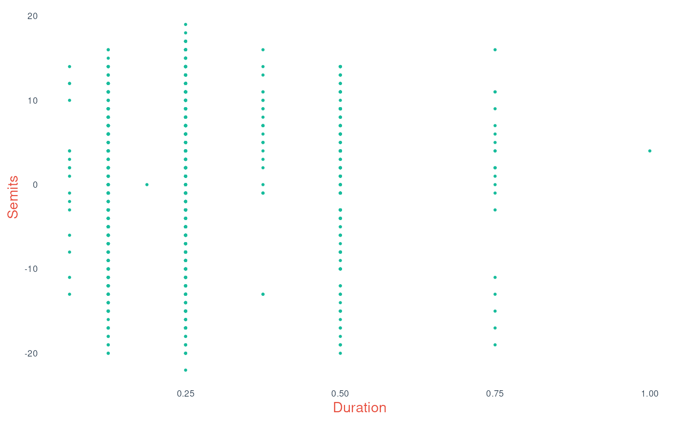
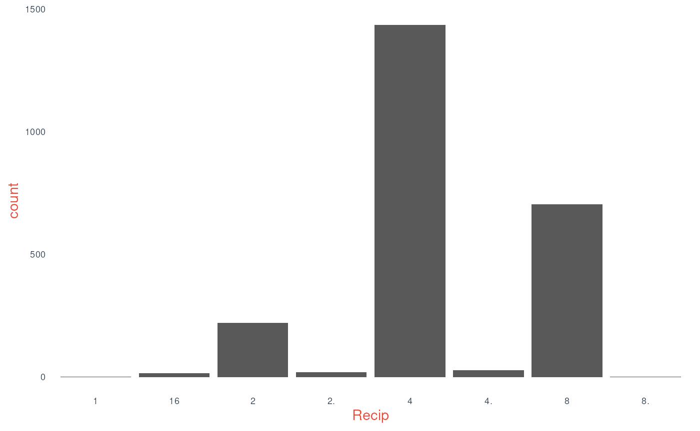
bach |>
ggplot(aes(Semits)) + geom_histogram()
> Warning:
[1m
[22mRemoved 4 rows containing non-finite outside the scale range
> (`stat_bin()`).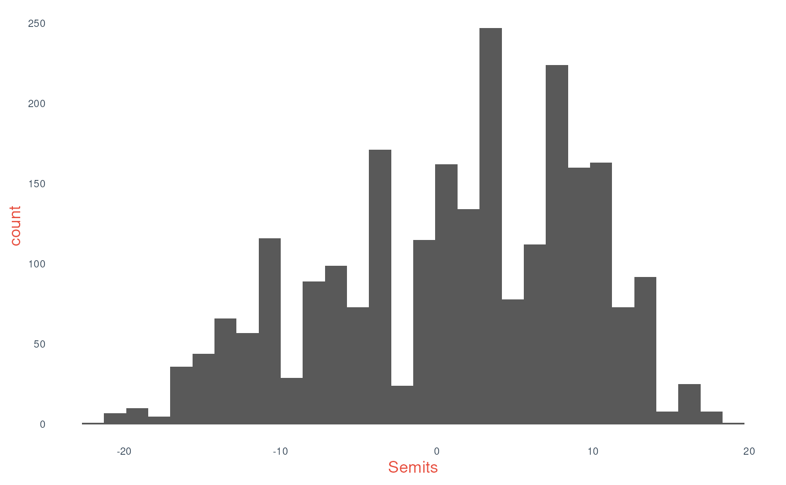
bach |>
ggplot(aes(Semits)) + geom_density()
> Warning:
[1m
[22mRemoved 4 rows containing non-finite outside the scale range
> (`stat_density()`).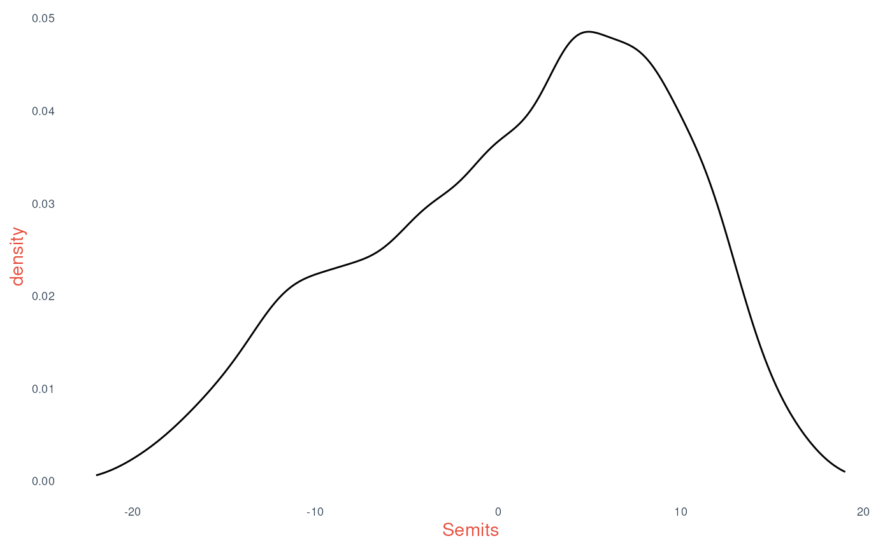
bach |>
ggplot(aes(Instrument, Semits)) + geom_violin()
> Warning:
[1m
[22mRemoved 4 rows containing non-finite outside the scale range
> (`stat_ydensity()`).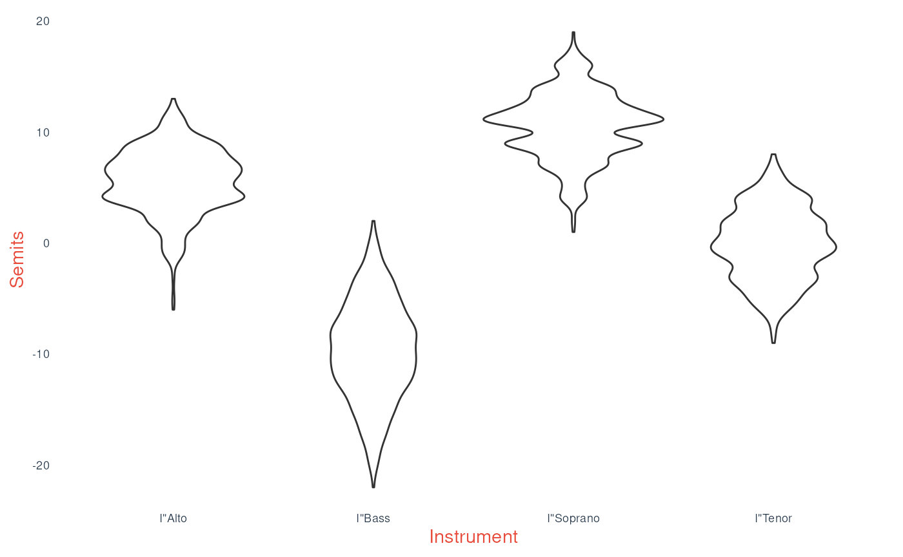